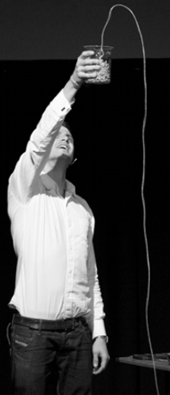
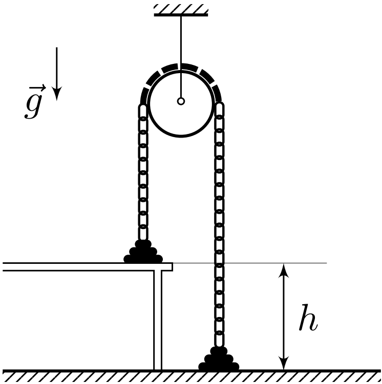
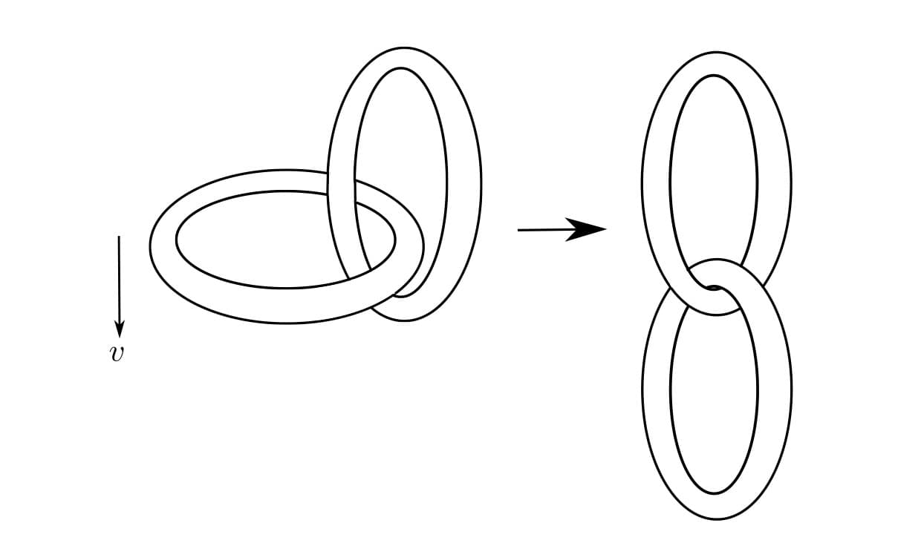
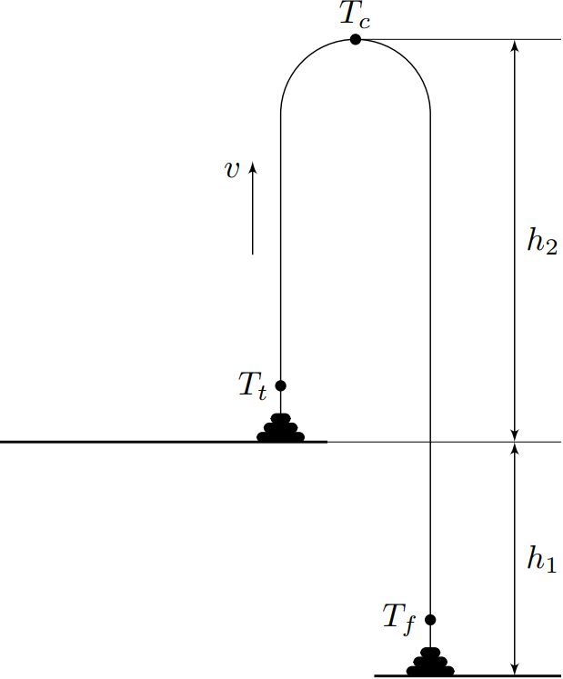
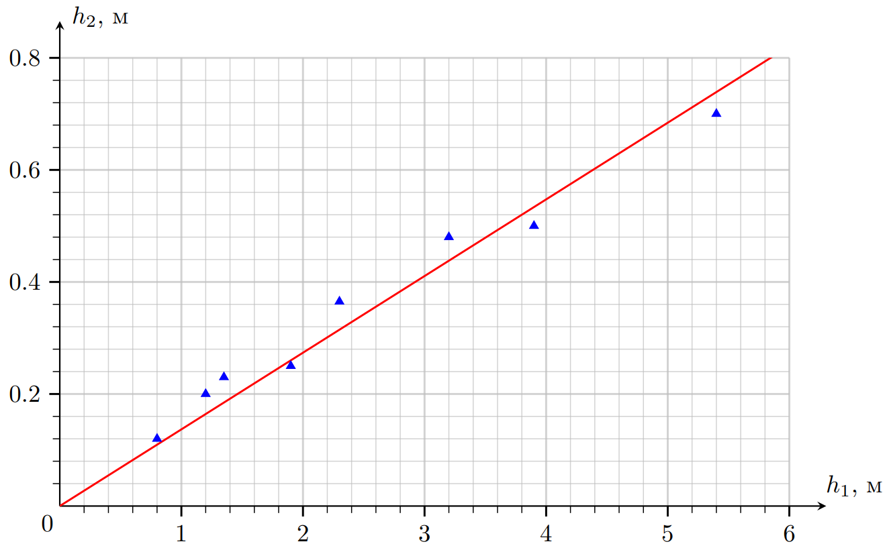
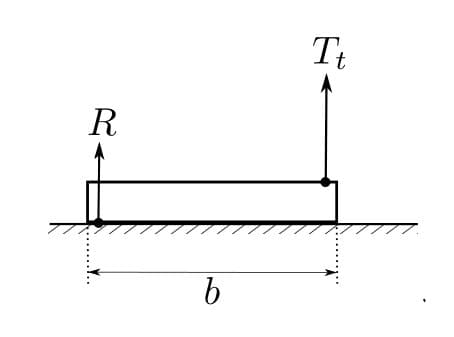
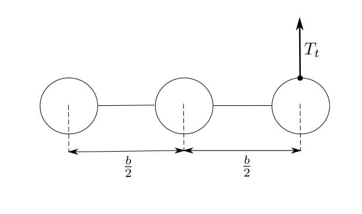
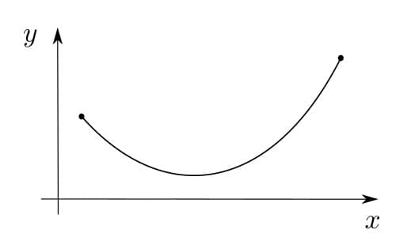

X21 (2021) — English translation
If you put a long string of beads in a glass vessel and pull out its free end, the beads will not just slip out and fall to the floor, but will bend in an arc. The beads, like water in a fountain, will seem to jump out to a noticeable height above the edge of the glass. The purpose of this task is to try to describe the physical causes of this amazing phenomenon and obtain a quantitative estimate of the magnitude of the “fountain” effect. Everywhere in the problem we can assume that the linear density of the chain of beads is known and equal to $\lambda$, and the acceleration of free fall is $g$.

To begin with, neglecting the “fountain” effect, let’s assume that the chain of beads filling the glass simply falls over its edge, and the lower end of the chain accelerates down. The chain links that fell out of the glass are connected to each other, so the impulse of gravity is spent not only on accelerating the dropped links, but also on attaching new links to the falling mass, and the acceleration is less than $g$.
To identify some of the causes of the “fountain”, we will solve and analyze the classical problem. A chain with inelastic links is thrown over a block, with part of it lying on the table and part on the floor. After the chain was released, it began to move. It is required to find the speed of steady uniform motion of the chain. Table height $h$.

To check the conservation of mechanical energy when the links are separated from the table, we will solve the problem in a different way: using the law of change in momentum.
Let's start analyzing energy losses in the system.
The difference in the results of points B1 and B4 is due to energy losses when already flying chain links sharply “pull” another link still lying on the table. In this case, a certain decaying sequence of longitudinal jerks occurs in the recently taken off part of the chain, or, one can consider it, one inelastic impact, leading to the joint movement of the new link with the already flying ones. The energy loss during such an inelastic impact is most easily described by moving to a reference frame rising upward with the chain speed $v$.

We are ready to consider the “fountain” case. Here and further we assume that the “fountain” has already been established and maintains a constant shape and speed; the ends of the chain lie on the table and on the floor.

Since the obtained result contradicts the experiment, it is necessary to adjust the model of the phenomenon. Let us assume, firstly, that there is a certain support reaction force acting from the side of the table on the link that “jumps” from the table. For dimensional reasons, this force must be proportional to $\lambda v^2$, so let $R=\alpha \lambda v^2$, where $\alpha$ is a certain numerical coefficient. Secondly, let the chain tension near the floor be $\beta \lambda v^2$, where $\beta$ is also a numerical coefficient.
The resulting estimate $h_2$ turns out to be too high. The figure below shows a graph $h_2(h_1)$ describing the effect sizes observed in the experiments.

The occurrence of a significant reaction of the support $R$, “pushing” the links coming off the table, is contrary to intuition. Let us, however, try to describe one of the reasons for its appearance. Let the chain consist of links of length $b$ and mass $m$, $I$ is the moment of inertia of each link (relative to the axis passing through its center and perpendicular to the plane of the figure). If, for example, a large force $T_t\gg mg$ is applied to the right end of a link that is about to come off the table, then at the first moment after this both the translational and rotational motion of the link will accelerate.

If you use beads as a chain, then the separation of the links from the table affects several neighboring beads at once. Let us assume that a segment of three small neighboring balls is set in motion, rigidly connected to each other by weightless segments of length $b/2$. Let the force $T_t$ act on one of the ends of this “three”.

In addition to the described reason for the occurrence of $R$, associated with the imprecision of the links, there are many more factors that contribute to this force, but their full calculation is complex and highly dependent on the design of the chain. For example, if these are beads, then lifting off the table can begin with horizontally “dragging” several beads over a pile of stationary ones. During such “dragging,” impacts may occur, the reaction of the support in which will have a vertical component. Further analysis of the process of link separation is beyond the scope of the problem.
First of all, let's consider the problem of a “catenary line”, i.e. Let us describe what form a chain with fixed ends takes, hanging statically in a gravitational field. Let the coordinate $s$ be introduced, measured along the chain from one of its ends. The angle of inclination $\theta(s)$ of the tangent to the chain and the tension force $T(s)$ depend on $s$. Consider a small arc of length $ds$ in the neighborhood of some $s$.
It is known that by solving such a system of equations, one can obtain the dependence $y(x)$, which describes a chain line in Cartesian coordinates. The beautiful fact is that the chain line is a hyperbolic cosine: $y(x) = A+B\cdot ch(Cx+D)$, where $A$, $B$, $C$, $D$ are some constants expressed in terms of the length of the chain and the coordinates of the suspension points. All possible chain lines have equations of this form.

Let’s move from the “static” task to the “dynamic” one. Let us consider a gushing chain and assume that the shape of the “fountain” has become established, i.e. the trajectories of all links exactly repeat each other. The speed of the chain in the “fountain” is $v$.
The tension force at each point is increased by $\tau$ compared to the “static” problem, and this is the only difference: it is known that such an addition to $T(s)$ does not affect the shape of the curve. Thus, we have proven that the “fountain” is also a chain line!
Source: https://pho.rs/p/107